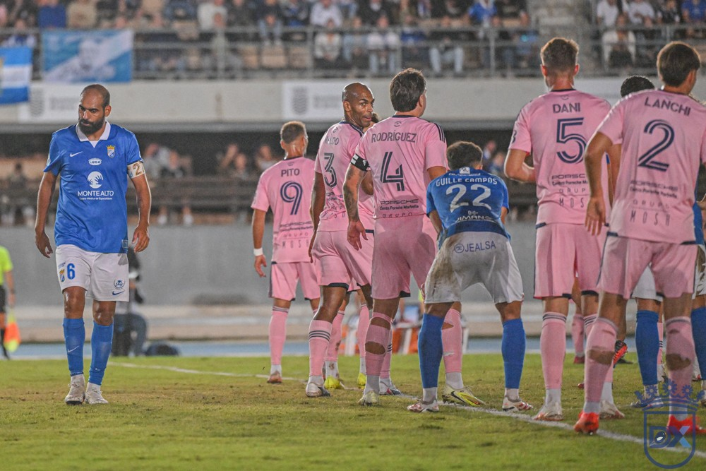

Fali: "Si meto un gol, a lo mejor doy una voltereta y ni sé hacerla"

Foto: Diario XerecistaEl central del Xerez CD, que jugó en el Cádiz CF hasta 2025, se enfrenta este miércoles a su antiguo club en la Copa del Rey. Asegura que celebrar un gol no sería una falta de respeto a la afición cadista.
El Xerez CD recibe este miércoles, a las 21:00, al Cádiz CF en Chapín. Para Fali Jiménez no será un partido más. El defensa pasó varias temporadas en el club de Carranza y sigue viviendo en Cádiz, donde sus hijos van al colegio y al instituto.
"Llevo siete años sin meter un gol"
Preguntado por cómo celebraría un hipotético gol ante su exequipo, Fali le quitó hierro al asunto con una sonrisa: "Llevo siete años sin meter un gol. Si meto un gol, imagínate... no sé ni lo que puedo hacer, a lo mejor doy una voltereta y ni sé hacerla. Celebrar un gol no sería una falta de respeto a la afición del Cádiz, pero ellos me conocen y saben el cariño que les tengo".
🇬🇧 Read in English ← Volver a la portada